Personagens
As pessoas que tornam essa jornada inesquecível — nos dois jogos
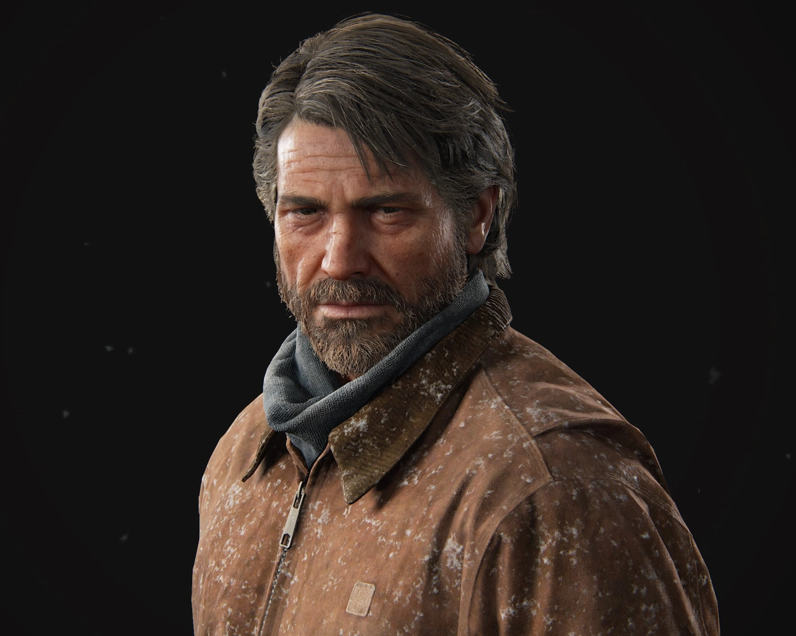
Joel Miller
Ex-carpinteiro de Austin, Texas. Joel perdeu tudo no início do surto e passou duas décadas se tornando alguém implacável e calculista. Trabalha como contrabandista na Zona de Quarentena de Boston com Tess, trocando suprimentos ilegais por favores — e sobrevivendo a qualquer custo.
Por dentro, carrega uma dor que nunca cicatrizou. A missão de escoltar Ellie vai despertar algo que ele jurou nunca mais sentir. Sua decisão final em Salt Lake City define o coração moral de toda a franquia.
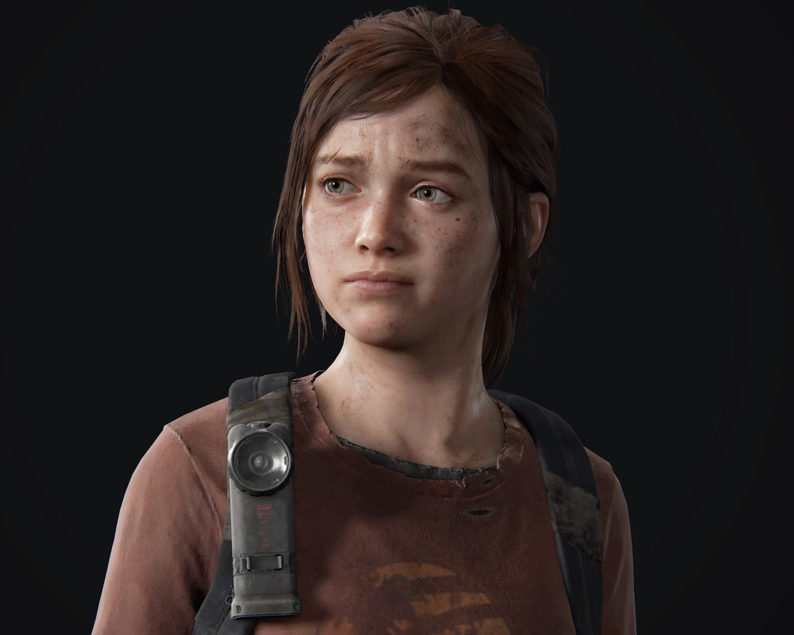
Ellie Williams
Criada no orfanato militar FEDRA em Boston, Ellie nunca conheceu o mundo antes do surto. Aos 14 anos, esconde um segredo extraordinário: é imune ao fungo Cordyceps. Sarcástica, corajosa e com um humor peculiar, usa piadas horríveis para lidar com um mundo horrível.
No Part II, Ellie tem 19 anos e vive em Jackson. Quando um trauma irreparável abala sua vida, ela parte em uma jornada de vingança por Seattle que irá testá-la até os limites da humanidade — e fazer o jogador questionar tudo.
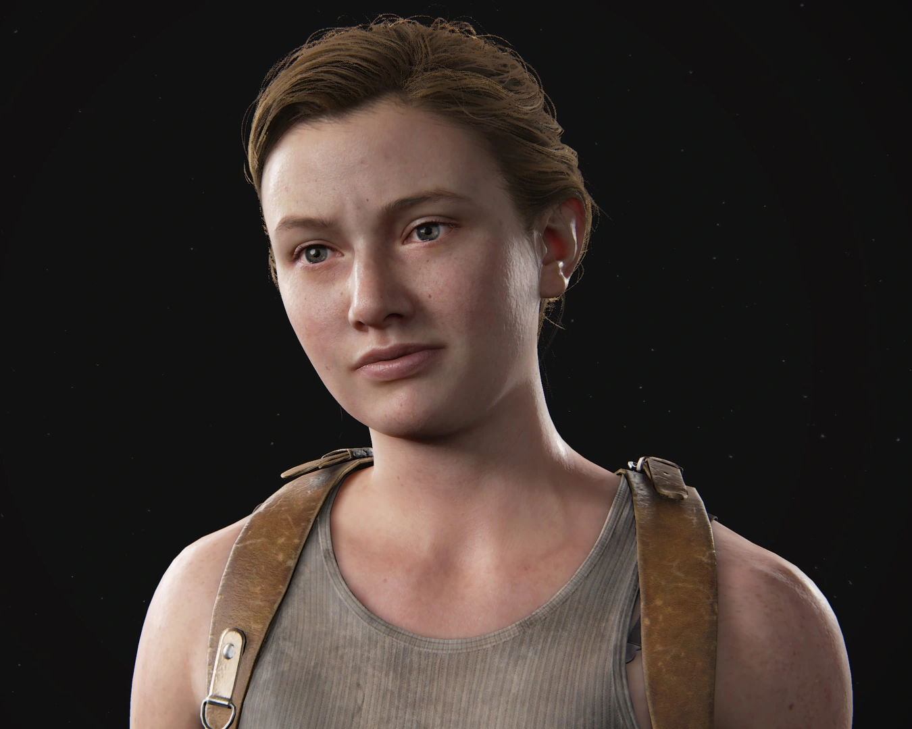
Abby Anderson
Soldado do Washington Liberation Front, Abby é fisicamente imponente, tecnicamente habilidosa e carrega suas próprias cicatrizes e motivações. Filha de um médico dos Vaga-lumes, ela cruzou o país inteiro em busca de um objetivo pessoal.
O jogo dedica metade de sua duração ao ponto de vista de Abby — uma decisão narrativa ousada que força o jogador a desenvolver empatia por quem começou como antagonista. É o coração divisivo e genial do Part II.
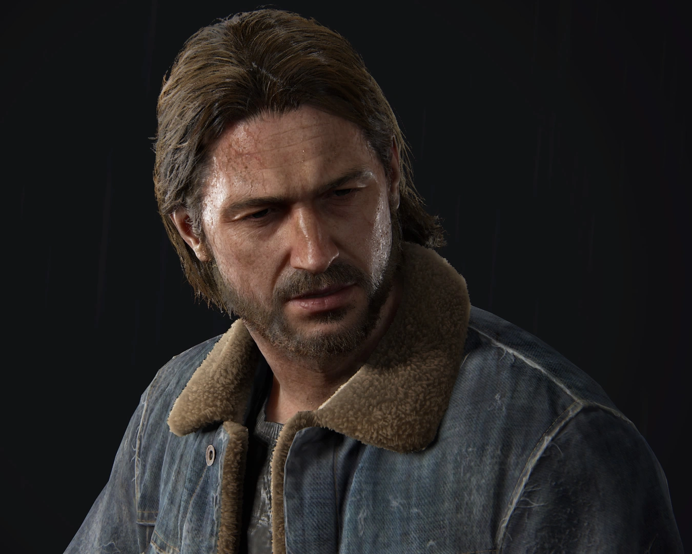
Tommy Miller
Irmão mais novo de Joel, Tommy foi um Vaga-lume antes de se estabelecer em Wyoming com sua esposa Maria. Conseguiu construir uma pequena comunidade funcional em Jackson — uma das poucas esperanças reais de civilização.
No Part II, Tommy tem um papel ativo na jornada para Seattle, sendo consumido por seu próprio desejo de vingança. Mais otimista que Joel, mas igualmente capaz de ser tomado pela raiva quando o que ama é ameaçado.
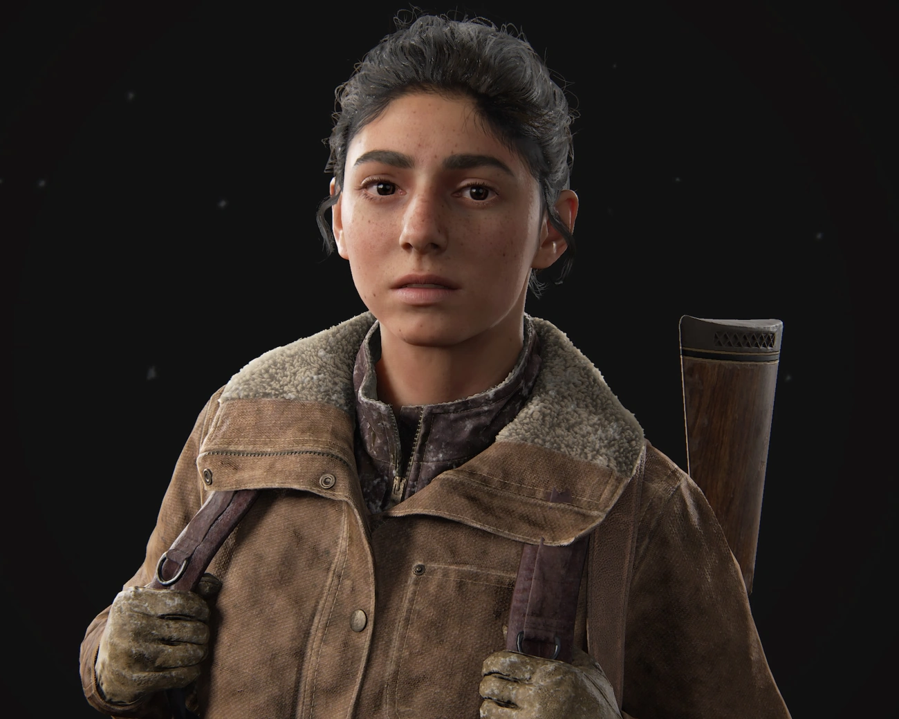
Dina
Companheira de Ellie em Jackson e parceira na jornada para Seattle. Inteligente, direta e com senso de humor afiado, Dina representa a âncora emocional de Ellie no Part II — e o que ela tem a perder com a vingança.
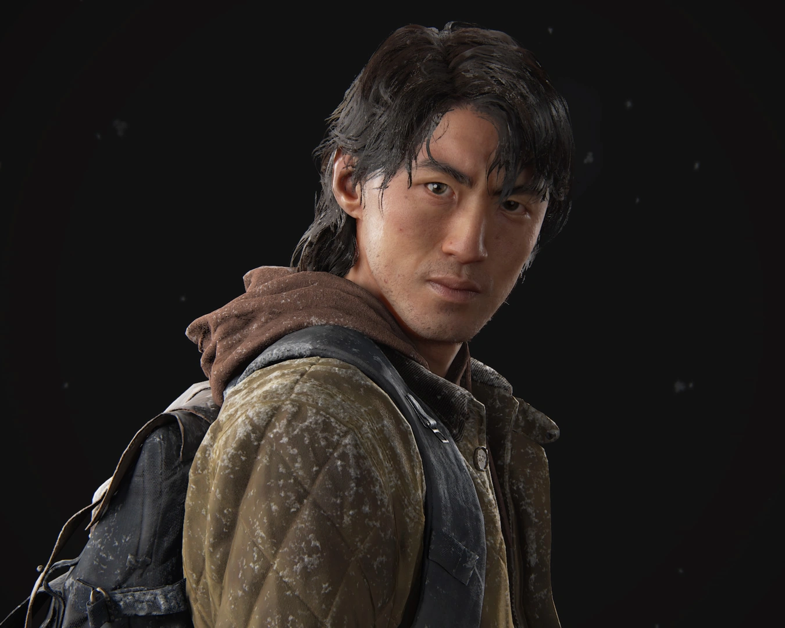
Jesse
Patrulheiro de confiança de Jackson e amigo próximo de Ellie. Jesse vai para Seattle para trazer Ellie e Dina de volta, demonstrando a lealdade silenciosa que define seu personagem.
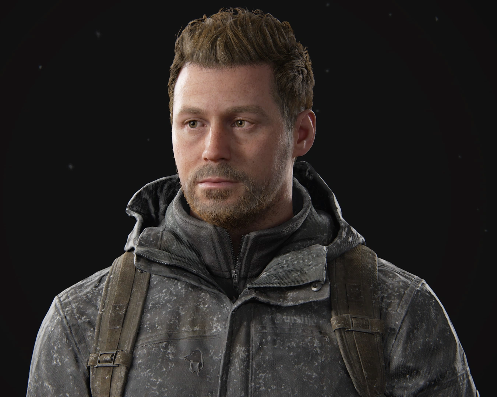
Owen Moore
Amigo próximo e ex-namorado de Abby, Owen questiona a violência do WLF e sonha em levar sua família para o sul, onde dizem que há esperança. Sua busca por algo além da guerra o coloca em caminho de colisão com todos.

Tess
Parceira de Joel há anos no contrabando de Boston, Tess é pragmática, dura e absolutamente leal. Fecha o acordo com os Vaga-lumes e convence Joel a escoltar Ellie para além dos muros.
Seu sacrifício precoce é o catalisador da jornada inteira — Tess vê em Ellie a chance de redenção que ela mesma nunca terá.
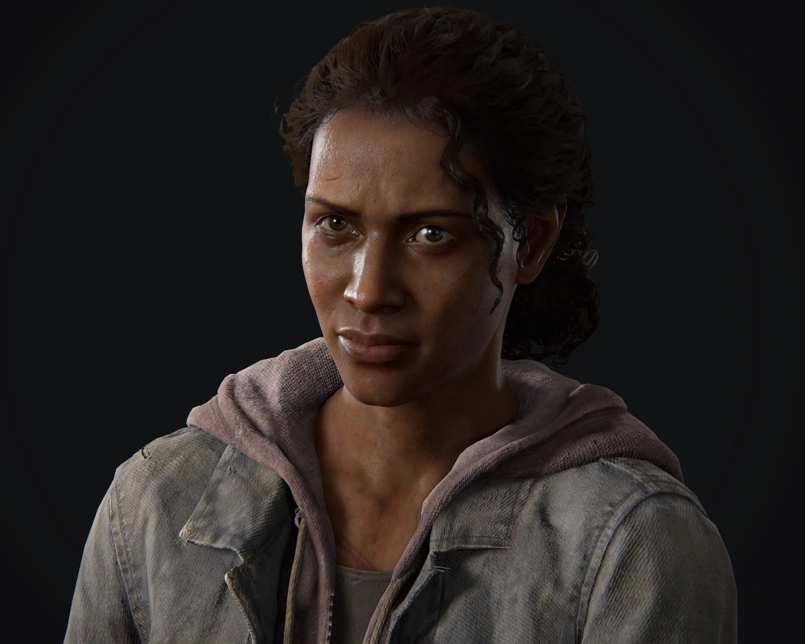
Marlene
Líder dos Vaga-lumes e velha amiga de Anna, a mãe de Ellie. Foi ela quem prometeu cuidar de Ellie e quem dedica tudo à busca por uma cura. Sua missão é a razão de toda a jornada existir.
Em Salt Lake City, sua decisão sobre o destino de Ellie coloca em xeque o coração moral da franquia inteira — e termina com Joel tomando a escolha por todos.
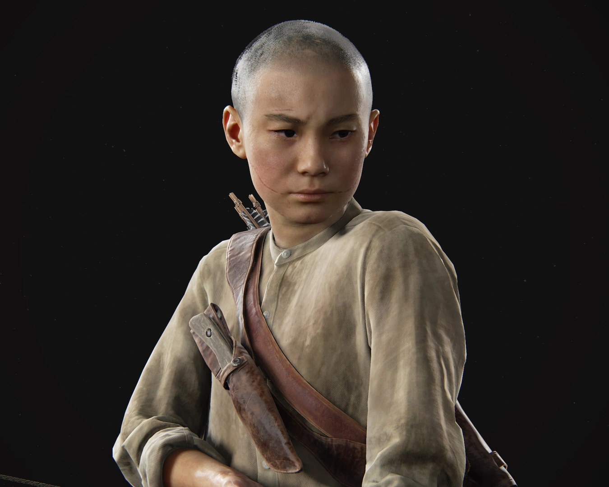
Lev
Adolescente trans que fugiu dos Seraphites depois de raspar a cabeça em recusa a um casamento forçado. Salvo por Abby, vira o centro emocional de toda a metade dela no Part II.
Sua coragem silenciosa e sua bondade num mundo brutal são o motivo pelo qual Abby decide deixar Ellie viver no final.
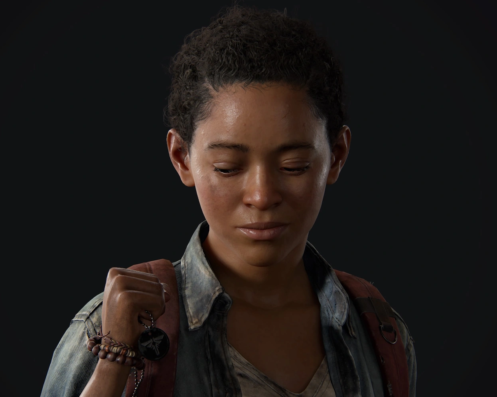
Riley Abel
Melhor amiga de Ellie no orfanato da FEDRA em Boston, Riley se junta aos Vaga-lumes e reaparece para uma última noite no shopping abandonado — o cenário central do DLC Left Behind.
Foi com Riley que Ellie descobriu o primeiro amor — e foi naquela noite que as duas foram mordidas. Só Ellie sobreviveu.
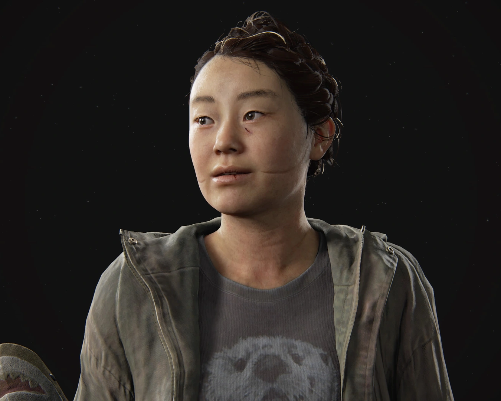
Yara
Irmã mais velha de Lev, Yara abandona os Seraphites para protegê-lo da execução. Encontra Abby ferida e forja uma aliança improvável que muda toda a história do Part II.
Sua relação fraterna com Lev é uma das mais comoventes do jogo — uma rocha de afeto verdadeiro em meio à guerra.
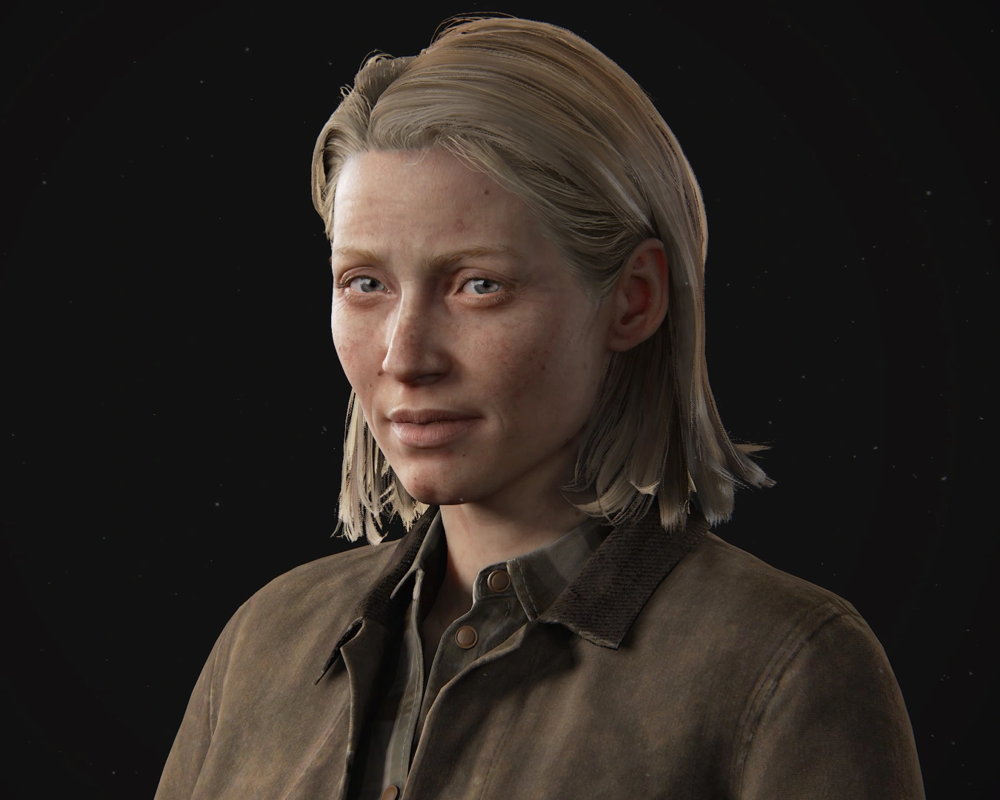
Maria Miller
Esposa de Tommy e uma das líderes da comunidade de Jackson, Wyoming. Ex-promotora pública, Maria mantém a ordem da última grande sociedade funcional que sobrou nos EUA.
É ela quem recebe Joel e Ellie em Jackson e, anos depois, quem suporta Tommy quando a tragédia bate à porta no Part II.
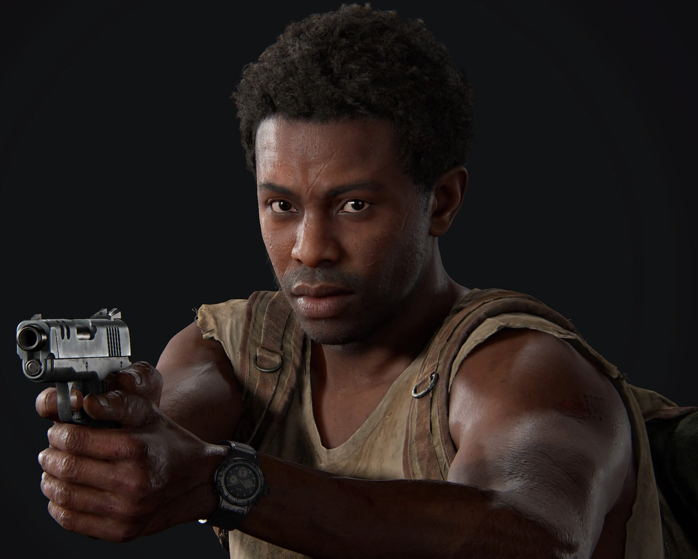
Henry Burrell
Sobrevivente de Pittsburgh que protege seu irmão mais novo Sam a qualquer custo. Forma uma aliança frágil com Joel e Ellie para escapar da cidade dominada por caçadores.
Seu desfecho trágico é um dos primeiros golpes emocionais do jogo — uma lembrança brutal de que nenhum vínculo é seguro nesse mundo.
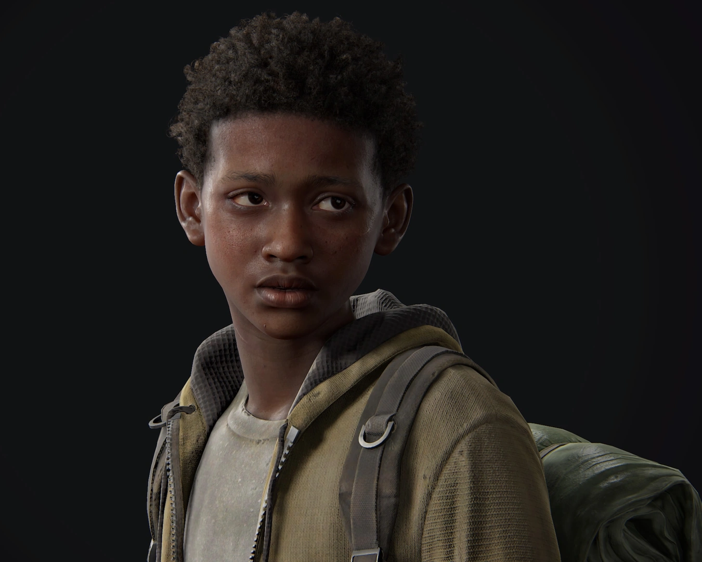
Sam Burrell
Irmão mais novo de Henry. Tem mais ou menos a idade da Ellie e oferece uma rara amizade infantil em meio ao caos da Pittsburgh tomada por caçadores e infectados.
Sua infecção secreta e a noite seguinte são uma das cenas mais devastadoras do jogo — e ensinam à Ellie que ser imune não significa estar a salvo da perda.
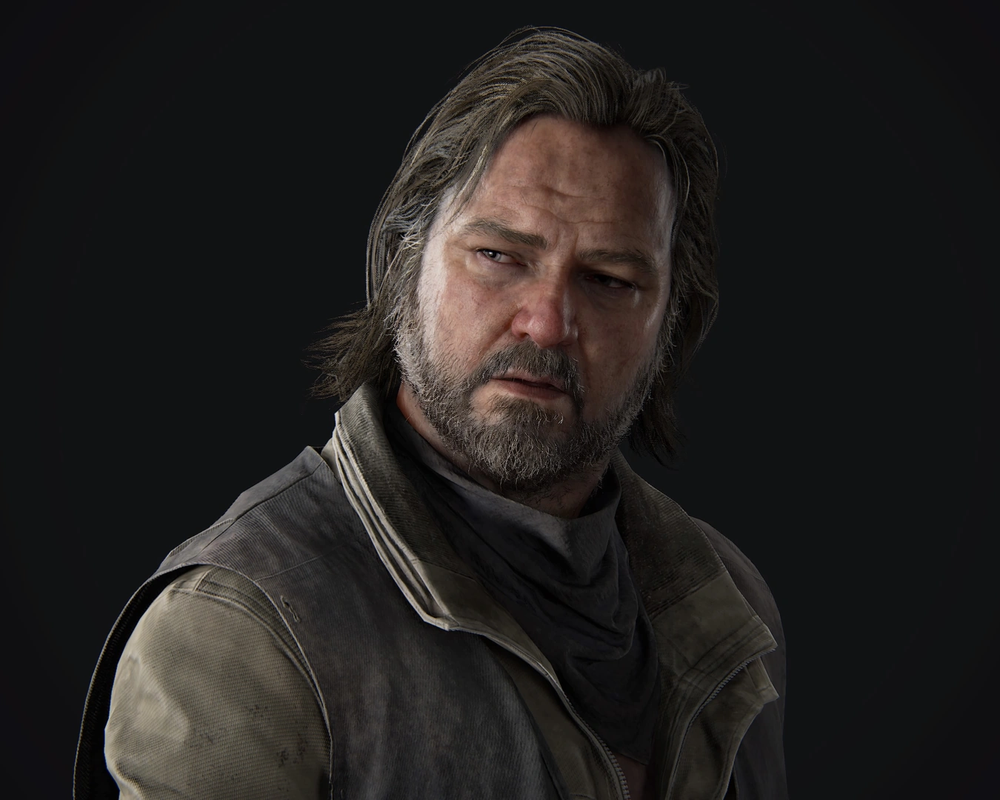
Bill
Sobrevivente paranoico e genial que armadilhou uma cidade inteira para viver sozinho. Devia um favor a Joel e ajuda a consertar um carro para a jornada continuar.
Durão e antissocial por fora, mas guarda em silêncio um luto que ele mesmo não quer encarar. Um dos personagens mais inesperadamente comoventes do Part I.
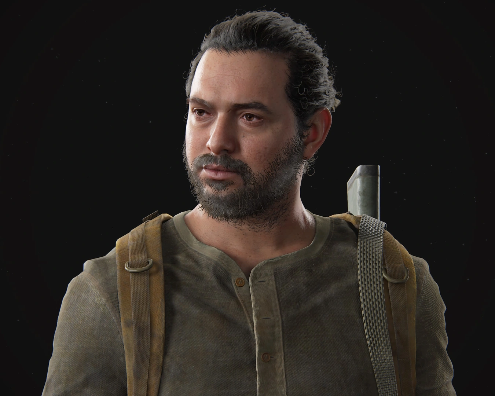
Manny Alvarez
Soldado de elite do WLF e melhor amigo de Abby. Carismático, brincalhão e absolutamente brutal em combate. Acredita firmemente na causa do WLF — mesmo quando ela vacila.
Sua amizade com Abby é uma das poucas constantes na vida dela em Seattle — e o motivo de boa parte da tensão moral do grupo.
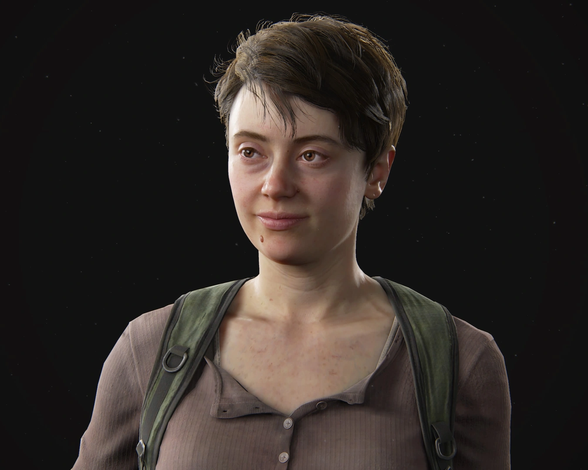
Mel
Médica do WLF, grávida, ex-namorada do Owen. Inteligente e direta, vive em conflito permanente com Abby pelo passado romântico com Owen — e por suas próprias convicções sobre a violência da facção.
Sua trajetória é um dos momentos em que o Part II expõe quão pessoal e doloroso é cada lado do ciclo de vingança.

Sarah Miller
Filha de 12 anos do Joel. Doce, esperta e protetora — Sarah é o coração que Joel perde nas primeiras horas do surto, em Austin, Texas.
O prólogo de TLOU continua sendo uma das aberturas mais devastadoras da história dos videogames. Tudo que Joel se torna durante 20 anos começa aqui.
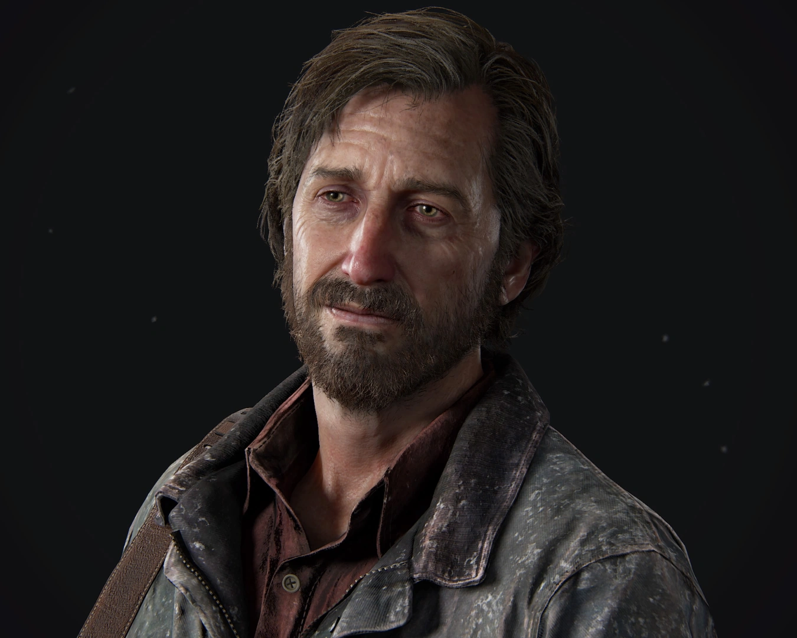
David
Líder de um grupo de sobreviventes no Lakeside Resort que recorre ao canibalismo. Educado, eloquente e profundamente perturbador — David é um dos antagonistas mais memoráveis da franquia.
Seu confronto final com Ellie no inverno transforma uma criança em alguém capaz de violência adulta — e sela o vínculo entre ela e Joel.